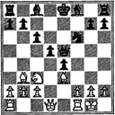
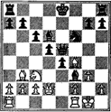

Partida Núm. 6
Ruy López
Blancas: Zeissl
Negras: Walthoffen
Viena, 1899
1. e4 e5 2. Nf3 Nc6 3. Bb5
{No hay amenaza inmediata de ganar al peón, porque después de
4. Bxc6 dxc6 5. Nxe5, la respuesta 5... Qd4 recupera el peón.
Pero hay presión sobre el caballo, y esta presión se intensifica
cuando las negras, tarde o temprano, adelanten su peón de dama,
y el caballo queda entonces clavado.}
3... f5
{Atrevido intento de tomar la iniciativa.
La idea es hacer que las blancas renuncien al centro capturando al peón f.}
4. d4 fxe4
{La captura de las negras tiene por principal objeto
sacar al caballo de su fuerte posición.}
5. Nxe5
{Aparentemente, una jugada enérgica. Las blancas recuperan su peón y evitan
5. ... d6 ó 5. ... d5. Después de cualquiera de estas dos jugadas, la continuación
6. Nxc6 bxc6 7. Bxc6+ gana la calidad.
Las blancas tienen también una poderosa amenaza con
6. Bxc6 dxc6 7. Qh5+ Ke7 8. Qf7+ Kd6 9. Nc4#.
Todo esto es muy tentador, de la misma manera que la posibilidad de dar pronto
el mate es atractiva para el jugador joven, pero hay que suprimir esa ambición.
Los ataques prematuros con amenaza de mate suelen ser repelidos
con pérdida de tiempo o material para el agresor.
Una continuación más segura es 5. Bxc6 dxc6 6. Nxe5.}
5... Nxe5 6. dxe5
{Las blancas no tienen nada que hacer con el enérgico 4. d4.
Era preferible el desarrollo del caballo de dama.}
6... c6!
{¿Una jugada de peón cuando hay que poner en juego las piezas?
Sí, la jugada está justificada por la posición particular.
Las negras tienen cuatro buenos argumentos para este adelanto del peón:
a) Deben ahuyentar al alfil antes de que puedan adelantar su peón de dama (de lo contrario, el rey queda en jaque).
b) El tiempo perdido al mover un peón queda compensado por el hecho de que el alfil debe perder también un tiempo al retirarse.
e) Abre una magnífica diagonal para la dama.
d) El ataque sobre el alfil se traducirá en la ganancia de un peón, y "un peón vale la pena de darse alguna molestia".}
7. Bc4
{Ordinariamente, éste es un excelente lugar para el alfil, pero 7. Be2 es más compatible con los requerimientos de la posición.
Las blancas han perdido los servicios del caballo de rey, y el alfil podría contribuir a la defensa del flanco del rey.}
7... Qa5+ 8. Nc3 Qxe5 9. O-O
{¡Mala! Era más discreto ocultar sus intenciones, desarrollar las piezas del flanco de dama y enrocarse más tarde, quizá en este último flanco.}
9... d5!
{Las negras se apoderan del centro, ahuyentan al alfil enemigo y con ello permiten que aparezca su propio alfll.
¡Todo ello en una sola jugada!}
10. Bb3
{También aquí es preferible la maniobra 10. Be2, en que el alfil domina dos diagonales.}
10... Nf6
{Organizando un ataque en el flanco de rey mediante el simple procedimiento de desarrollar sus piezas.}
11. Be3
{En parte para evitar que las negras jueguen 11... Bc5, y en parte para
desalojar a la dama centralizada mediante 12. Bd4 o 12. Qd4.}

11... Bd6!
{Magnífica jugada que tiene más significación que el mero desarrollo de una pieza
combinado con una amenaza de mate. El objetivo ulterior es crear una debilidad
permanente e irremediable en el flanco de rey de las blancas obligando a moverse
a uno de los peones defensores.}
12. g3
{La única defensa posible. Si en lugar de ello 12. f4, exf3 a.p. 13. Qxf3, Qxh2+ 14. Kf2 Bg4, y las negras ganan.
Después de la jugada del texto, las negras desatan un ataque. No sacrifican una pieza inútilmente por el peón del caballo,
ni intentan irrumpir en la posición con el asalto de peones 13... h5, h4 y h3.}
12... Bg4!
{Basan su ataque en el tema de la penetración. Las casillas f3 y h3 de las blancas han quedado debilitadas con la jugada
12. g3, pues ya no están protegidas por el peón. Estas casillas
se han convertido en "agujeros", como las llamó Steinitz por primera vez. Las piezas enemigas
que se establecen en estas casillas lo hacen con firmeza, pues no hay peones que puedan ahuyentarlas.
El alfil ataca a la dama con el objetivo de instalarse en f3 sin pérdida de tiempo.}
13. Qd2
{Si en lugar de esto las blancas interponen el caballo en e2, entonces
13... Qh5, atacando una vez más al caballo, obliga a 14. Te1, con lo que
14... Qh3 planta una pieza en un agujero. La siguiente jugada de las
negras es 15... Bf3, ocupando el otro agujero, y la escena queda lista para el mate en g2.}
13... Bf3 14. Bf4
{Con la esperanza de que haya algo semejante a 14... D2R 15. AxA DxA 16. D4A, en que uno o dos cambios podrían aliviar las dificultades.}

14... Qf5!
{Abandonan al alfil, pero a las negras sólo les interesa llevar la dama a h3, con un dominio mortal sobre las casillas blancas.}
15. Nd1!
{El caballo va a e3 para defender la casilla g2, donde es inminente el mate.}
15... Qh3 16. Ne3 Ng4
{Nueva amenaza: mate en h2. Adviértase el inteligente uso de las casillas blancas debilitadas al infiltrarse las piezas negras en la posición enemiga.}
17. Rfc1 Qxh2+
{El mate viene en la siguiente jugada: 18. Kf1 Qh1#.}
0-1